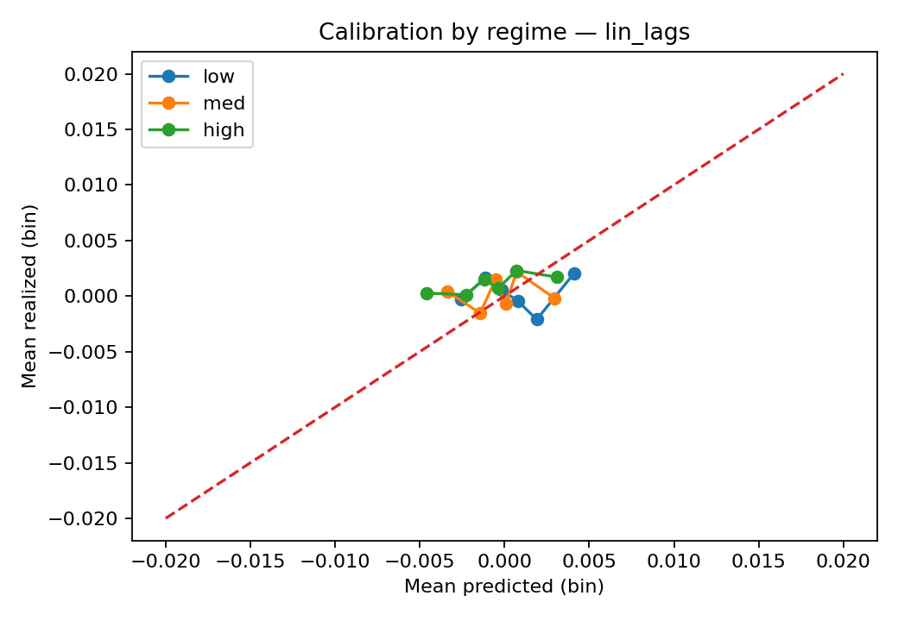

18 Session 18 — Walk‑forward + Regime Analysi
Below is a complete lecture package for Session 18 — Walk‑forward + Regime Analysis (75 minutes). It includes a timed agenda, slide talking points, a Colab‑friendly in‑class lab with copy‑paste code, and homework with copy‑paste code. You’ll add volatility regimes to your rolling‑origin evaluation (with embargo), compute metrics by regime, and produce calibration plots that reveal where baselines over/under‑predict.
Educational use only — not trading advice. Assumes your repo in Drive (e.g.,
unified-stocks-teamX) withdata/processed/returns.parquetanddata/processed/features_v1.parquet. If missing, the lab will synthesize a small fallback so you can run end‑to‑end.
18.1 Session 18 — Walk‑forward + Regime Analysis (75 min)
18.1.1 Learning goals
By the end of class, students can:
- Use embargoed rolling‑origin splits (Session 15) and apply a static universe (Session 17) consistently.
- Construct volatility regimes (low/med/high) from rolling volatility computed causally (≤ t), and set regime thresholds using training‑only data per split.
- Evaluate MAE, sMAPE, MASE by regime, with macro and micro aggregation.
- Make calibration plots (binned predicted vs. realized returns) by regime and interpret them.
18.2 Agenda (75 min)
- (10 min) Slides: walk‑forward recap (expanding vs sliding), embargo; regime intuition
- (10 min) Slides: defining regimes (rolling std), training‑only thresholds, leakage pitfalls
- (35 min) In‑class lab: add regime labels (train‑only quantiles) → evaluate naive & linear‑lags by regime → calibration plots
- (10 min) Wrap‑up + homework brief
- (10 min) Buffer / Q&A
18.3 Slide talking points (paste into your deck)
18.3.1 Why regime analysis?
- Model error is not uniform. Many models fail during high‑volatility periods.
- Reporting one global metric hides when/where models break.
- Regime‑aware metrics guide feature/model design and risk controls.
18.3.2 Splits & embargo refresher
- Rolling‑origin, expanding: train grows, validation moves forward.
- Embargo: gap (e.g., 5 business days) between train end and val start to reduce adjacency leakage.
18.3.3 Defining volatility regimes (avoid leakage)
- Use rolling standard deviation of returns (e.g.,
roll_std_20) computed up to and including t. - Thresholds: choose quantiles (e.g., 33% and 66%) on TRAIN ONLY for each split; label both train & val using those fixed thresholds.
- Categories:
low,med,high. Treat labels as categorical dtypes.
18.3.4 Metrics & calibration by regime
Compute MAE, sMAPE, MASE within each regime. Aggregate macro/micro.
Calibration (point forecasts): bin predictions into deciles; plot mean predicted vs. mean realized per bin.
- Perfect calibration ⇒ points on the 45° line.
- Plot one figure overall and one per regime.
18.4 In‑class lab (35 min, Colab‑friendly)
Run each block as its own cell. Adjust
REPO_NAMEto your repo name.
18.4.1 0) Setup & load (with safe fallbacks)
from google.colab import drive
drive.mount('/content/drive', force_remount=True)
REPO_NAME = "unified-stocks-teamX" # <- change if needed
BASE_DIR = "/content/drive/MyDrive/dspt25"
REPO_DIR = f"{BASE_DIR}/{REPO_NAME}"
import os, pathlib, numpy as np, pandas as pd, json
from pathlib import Path
pathlib.Path(REPO_DIR).mkdir(parents=True, exist_ok=True)
os.chdir(REPO_DIR)
for p in ["data/raw","data/processed","data/static","reports","scripts","tests","docs/figs"]:
Path(p).mkdir(parents=True, exist_ok=True)
print("Working dir:", os.getcwd())
# Load returns; synthesize if missing
rpath = Path("data/processed/returns.parquet")
if rpath.exists():
returns = pd.read_parquet(rpath)
else:
rng = np.random.default_rng(0)
dates = pd.bdate_range("2022-01-03", periods=360)
frames=[]
for t in ["AAPL","MSFT","GOOGL","AMZN","NVDA"]:
eps = rng.normal(0,0.012,size=len(dates)).astype("float32")
adj = 100*np.exp(np.cumsum(eps))
df = pd.DataFrame({
"date": dates, "ticker": t,
"adj_close": adj.astype("float32"),
"log_return": np.r_[np.nan, np.diff(np.log(adj))].astype("float32")
})
df["r_1d"] = df["log_return"].shift(-1)
df["weekday"] = df["date"].dt.weekday.astype("int8")
df["month"] = df["date"].dt.month.astype("int8")
frames.append(df)
returns = pd.concat(frames, ignore_index=True).dropna().reset_index(drop=True)
returns["ticker"] = returns["ticker"].astype("category")
returns.to_parquet(rpath, index=False)
# Load features or generate minimal set with rolling std (causal)
fpath = Path("data/processed/features_v1.parquet")
if fpath.exists():
feats = pd.read_parquet(fpath)
if "roll_std_20" not in feats.columns:
# ensure we have rolling volatility
feats = feats.sort_values(["ticker","date"])
feats["roll_std_20"] = feats.groupby("ticker")["log_return"].rolling(20, min_periods=20).std().reset_index(level=0, drop=True)
else:
feats = returns.sort_values(["ticker","date"]).copy()
for k in [1,2,3]:
feats[f"lag{k}"] = feats.groupby("ticker")["log_return"].shift(k)
feats["roll_std_20"] = feats.groupby("ticker")["log_return"].rolling(20, min_periods=20).std().reset_index(level=0, drop=True)
# If static universe exists from Session 17, apply it
univ_files = sorted(Path("data/static").glob("universe_*.csv"))
if univ_files:
univ = pd.read_csv(univ_files[-1])["ticker"].astype(str)
feats = feats[feats["ticker"].astype(str).isin(set(univ))]
returns = returns[returns["ticker"].astype(str).isin(set(univ))]
# Harmonize types & sort
for df in (returns, feats):
df["date"] = pd.to_datetime(df["date"])
df["ticker"] = df["ticker"].astype("category")
feats = feats.dropna(subset=["log_return"]).sort_values(["ticker","date"]).reset_index(drop=True)
returns = returns.sort_values(["ticker","date"]).reset_index(drop=True)
feats.head(3)18.4.2 1) Rolling‑origin splits (expanding) with embargo
import numpy as np, pandas as pd
def make_rolling_origin_splits(dates, train_min=252, val_size=63, step=63, embargo=5):
u = np.array(sorted(pd.to_datetime(pd.Series(dates).unique())))
splits=[]; i=train_min-1; n=len(u)
while True:
if i>=n: break
a,b = u[0], u[i]
vs = i + embargo + 1
ve = vs + val_size - 1
if ve>=n: break
splits.append((a,b,u[vs],u[ve]))
i += step
return splits
splits = make_rolling_origin_splits(feats["date"], train_min=252, val_size=63, step=63, embargo=5)
print("Num splits:", len(splits))
splits[:2]18.4.3 2) Regime thresholds from training‑only (quantiles of rolling vol)
def regime_thresholds(train_df, vol_col="roll_std_20", q_low=0.33, q_high=0.66):
v = train_df[vol_col].dropna().to_numpy()
if len(v) < 100: # defensive: small train
q_low, q_high = 0.4, 0.8
return float(np.quantile(v, q_low)), float(np.quantile(v, q_high))
def label_regime(df, vol_col, lo, hi):
# low: <= lo, high: >= hi, else med; NaNs -> 'unknown'
out = df.copy()
vc = out[vol_col]
regime = pd.Series(pd.Categorical(["unknown"]*len(out), categories=["low","med","high","unknown"]), index=out.index)
regime[(vc.notna()) & (vc <= lo)] = "low"
regime[(vc.notna()) & (vc > lo) & (vc < hi)] = "med"
regime[(vc.notna()) & (vc >= hi)] = "high"
out["regime"] = regime.astype("category")
return out
# Demonstrate on first split in class
a,b,c,d = splits[0]
tr = feats[(feats["date"]>=a) & (feats["date"]<=b)]
va = feats[(feats["date"]>=c) & (feats["date"]<=d)]
lo, hi = regime_thresholds(tr, "roll_std_20", 0.33, 0.66)
tr_lab = label_regime(tr, "roll_std_20", lo, hi)
va_lab = label_regime(va, "roll_std_20", lo, hi)
print({"lo": lo, "hi": hi}, tr_lab["regime"].value_counts().to_dict(), va_lab["regime"].value_counts().to_dict())18.4.4 3) Baseline predictions (naive & linear‑lags per ticker, fit on TRAIN only)
from sklearn.pipeline import Pipeline
from sklearn.preprocessing import StandardScaler
from sklearn.linear_model import LinearRegression
# features we will use for linear baseline
XCOLS = [c for c in ["lag1","lag2","lag3"] if c in feats.columns]
if not XCOLS:
# create lags on the fly (causal)
feats = feats.sort_values(["ticker","date"]).copy()
for k in [1,2,3]:
feats[f"lag{k}"] = feats.groupby("ticker")["log_return"].shift(k)
XCOLS = ["lag1","lag2","lag3"]
def fit_predict_lin_per_ticker(train_df, val_df):
preds=[]
for tkr, trk in train_df.groupby("ticker"):
vak = val_df[val_df["ticker"]==tkr]
if len(trk)==0 or len(vak)==0: continue
pipe = Pipeline([("scaler", StandardScaler()), ("lr", LinearRegression())])
pipe.fit(trk[XCOLS].dropna().values, trk.dropna(subset=XCOLS)["r_1d"].values)
yhat = pipe.predict(vak[XCOLS].fillna(0).values)
out = vak[["date","ticker","r_1d","log_return","regime"]].copy()
out["yhat_lin"] = yhat.astype("float32")
preds.append(out)
return pd.concat(preds, ignore_index=True) if preds else pd.DataFrame()
def add_naive_preds(df):
out = df.copy()
out["yhat_naive"] = out["log_return"] # r_{t+1} ~ log_return_t
return out
tr_lab2 = add_naive_preds(tr_lab)
va_lab2 = add_naive_preds(va_lab)
val_lin = fit_predict_lin_per_ticker(tr_lab2, va_lab2)
val = va_lab2.merge(val_lin[["date","ticker","yhat_lin"]], on=["date","ticker"], how="left")
val.head(3)18.4.5 4) Metrics by regime (MAE, sMAPE, MASE; macro & micro)
def mae(y, yhat):
y = np.asarray(y); yhat = np.asarray(yhat)
return float(np.mean(np.abs(y - yhat)))
def smape(y,yhat,eps=1e-8):
y = np.asarray(y); yhat = np.asarray(yhat)
return float(np.mean(2.0*np.abs(y-yhat)/(np.abs(y)+np.abs(yhat)+eps)))
def mase(y_true, y_pred, y_train_true, y_train_naive):
scale = mae(y_train_true, y_train_naive) + 1e-12
return float(mae(y_true,y_pred)/scale)
def per_regime_metrics(val_df, train_df, pred_col):
rows=[]
for reg, g in val_df.groupby("regime"):
if reg == "unknown" or len(g)==0:
continue
# build per-ticker MASE scales from TRAIN
per_t = []
for tkr, gv in g.groupby("ticker"):
gt = train_df[train_df["ticker"]==tkr].dropna(subset=["r_1d"])
if len(gt)==0: continue
m = {
"ticker": tkr,
"n": int(gv["r_1d"].notna().sum()),
"mae": mae(gv["r_1d"], gv[pred_col]),
"smape": smape(gv["r_1d"], gv[pred_col]),
"mase": mase(gv["r_1d"], gv[pred_col], gt["r_1d"], gt["log_return"]),
"regime": reg
}
per_t.append(m)
per_t = pd.DataFrame(per_t)
if per_t.empty:
continue
# macro (mean of per-ticker)
macro = per_t[["mae","smape","mase"]].mean().to_dict()
# micro (weighted by n)
w = per_t["n"].to_numpy()
micro = {
"micro_mae": float(np.average(per_t["mae"], weights=w)),
"micro_smape": float(np.average(per_t["smape"], weights=w)),
"micro_mase": float(np.average(per_t["mase"], weights=w)),
}
rows.append({"regime":reg, **{f"macro_{k}":float(v) for k,v in macro.items()}, **micro})
return pd.DataFrame(rows)
met_naive = per_regime_metrics(val, tr_lab2, "yhat_naive")
met_lin = per_regime_metrics(val.dropna(subset=["yhat_lin"]), tr_lab2, "yhat_lin")
print("NAIVE by regime:\n", met_naive)
print("\nLIN-LAGS by regime:\n", met_lin)
# Save
pd.concat([
met_naive.assign(model="naive"),
met_lin.assign(model="lin_lags")
], ignore_index=True).to_csv("reports/regime_metrics_split1.csv", index=False)18.4.6 5) Calibration plots overall and by regime (binned)
import matplotlib.pyplot as plt
import numpy as np, pandas as pd, pathlib
def calibration_by_bins(df, pred_col, y_col="r_1d", n_bins=10):
d = df.dropna(subset=[pred_col, y_col]).copy()
d["bin"] = pd.qcut(d[pred_col], q=n_bins, duplicates="drop")
grp = d.groupby("bin").agg(
mean_pred=(pred_col, "mean"),
mean_true=(y_col, "mean"),
count=(y_col, "size")
).reset_index()
return grp
# Overall calibration (lin_lags) on validation slice
cal_overall = calibration_by_bins(val.dropna(subset=["yhat_lin"]), "yhat_lin", "r_1d", n_bins=10)
plt.figure(figsize=(5,4))
plt.plot(cal_overall["mean_pred"], cal_overall["mean_true"], marker="o")
lim = max(abs(cal_overall["mean_pred"]).max(), abs(cal_overall["mean_true"]).max())
plt.plot([-lim, lim], [-lim, lim], linestyle="--")
plt.xlabel("Mean predicted (bin)"); plt.ylabel("Mean realized (bin)")
plt.title("Calibration (overall) — lin_lags")
plt.tight_layout()
plt.savefig("docs/figs/calibration_overall_lin.png", dpi=160)
"Saved docs/figs/calibration_overall_lin.png"
# By regime
plt.figure(figsize=(6.5,4.5))
for i, reg in enumerate(["low","med","high"], start=1):
g = val[(val["regime"]==reg) & (val["yhat_lin"].notna())]
if len(g) < 50:
continue
cal = calibration_by_bins(g, "yhat_lin", "r_1d", n_bins=6)
plt.plot(cal["mean_pred"], cal["mean_true"], marker="o", label=reg)
lim = 0.02 # small returns
plt.plot([-lim, lim], [-lim, lim], linestyle="--")
plt.xlabel("Mean predicted (bin)"); plt.ylabel("Mean realized (bin)")
plt.title("Calibration by regime — lin_lags")
plt.legend()
plt.tight_layout()
plt.savefig("docs/figs/calibration_by_regime_lin.png", dpi=160)
"Saved docs/figs/calibration_by_regime_lin.png"18.5 Wrap‑up (10 min) — key points to emphasize
- Regime thresholds must be set on TRAIN ONLY each split to avoid leakage.
- Report by‑regime metrics alongside overall metrics; show macro & micro.
- Calibration plots (binned predicted vs. realized) quickly show systematic bias; compare regimes.
18.6 Homework (due before Session 19)
Goal: Produce a full regime‑aware evaluation across all splits for naive and linear‑lags models and include the figures in your Quarto report.
18.6.1 A. Script: scripts/regime_eval.py — run across all splits
#!/usr/bin/env python
from __future__ import annotations
import argparse, json, numpy as np, pandas as pd
from pathlib import Path
from sklearn.pipeline import Pipeline
from sklearn.preprocessing import StandardScaler
from sklearn.linear_model import LinearRegression
def make_splits(dates, train_min=252, val_size=63, step=63, embargo=5):
u = np.array(sorted(pd.to_datetime(pd.Series(dates).unique())))
splits=[]; i=train_min-1; n=len(u)
while True:
if i>=n: break
a,b = u[0], u[i]; vs=i+embargo+1; ve=vs+val_size-1
if ve>=n: break
splits.append((a,b,u[vs],u[ve])); i+=step
return splits
def regime_thresholds(train_df, vol_col="roll_std_20", q_low=0.33, q_high=0.66):
v = train_df[vol_col].dropna().to_numpy()
if len(v) < 100:
q_low, q_high = 0.4, 0.8
return float(np.quantile(v, q_low)), float(np.quantile(v, q_high))
def label_regime(df, vol_col, lo, hi):
out = df.copy()
vc = out[vol_col]
reg = pd.Series(pd.Categorical(["unknown"]*len(out), categories=["low","med","high","unknown"]), index=out.index)
reg[(vc.notna()) & (vc <= lo)] = "low"
reg[(vc.notna()) & (vc > lo) & (vc < hi)] = "med"
reg[(vc.notna()) & (vc >= hi)] = "high"
out["regime"] = reg.astype("category")
return out
def add_naive(df):
out = df.copy()
out["yhat_naive"] = out["log_return"]
return out
def fit_lin(tr, va, xcols):
from sklearn.pipeline import Pipeline
from sklearn.preprocessing import StandardScaler
from sklearn.linear_model import LinearRegression
preds=[]
for tkr, trk in tr.groupby("ticker"):
vak = va[va["ticker"]==tkr]
if len(trk)==0 or len(vak)==0: continue
Xtr = trk.dropna(subset=xcols);
pipe = Pipeline([("scaler", StandardScaler()), ("lr", LinearRegression())])
pipe.fit(Xtr[xcols].values, Xtr["r_1d"].values)
yhat = pipe.predict(vak[xcols].fillna(0).values)
out = vak[["date","ticker","r_1d","log_return","regime"]].copy()
out["yhat_lin"] = yhat
preds.append(out)
return pd.concat(preds, ignore_index=True) if preds else pd.DataFrame()
def mae(y, yhat): y=np.asarray(y); yhat=np.asarray(yhat); return float(np.mean(np.abs(y-yhat)))
def smape(y,yhat,eps=1e-8):
y=np.asarray(y); yhat=np.asarray(yhat); return float(np.mean(2*np.abs(y-yhat)/(np.abs(y)+np.abs(yhat)+eps)))
def mase(y_true, y_pred, y_train_true, y_train_naive):
return float(mae(y_true, y_pred)/(mae(y_train_true, y_train_naive)+1e-12))
def per_regime_metrics(val_df, train_df, pred_col):
rows=[]
for reg, g in val_df.groupby("regime"):
if reg=="unknown" or len(g)==0: continue
per=[]
for tkr, gv in g.groupby("ticker"):
gt = train_df[train_df["ticker"]==tkr].dropna(subset=["r_1d"])
if len(gt)==0: continue
per.append({"ticker":tkr,"n":int(gv["r_1d"].notna().sum()),
"mae": mae(gv["r_1d"], gv[pred_col]),
"smape": smape(gv["r_1d"], gv[pred_col]),
"mase": mase(gv["r_1d"], gv[pred_col], gt["r_1d"], gt["log_return"]),
"regime": reg})
pt = pd.DataFrame(per)
if pt.empty: continue
macro = pt[["mae","smape","mase"]].mean().to_dict()
w = pt["n"].to_numpy()
micro = {"micro_mae": float(np.average(pt["mae"], weights=w)),
"micro_smape": float(np.average(pt["smape"], weights=w)),
"micro_mase": float(np.average(pt["mase"], weights=w))}
rows.append({"regime":reg, **{f"macro_{k}":float(v) for k,v in macro.items()}, **micro})
return pd.DataFrame(rows)
def main():
ap = argparse.ArgumentParser()
ap.add_argument("--features", default="data/processed/features_v1.parquet")
ap.add_argument("--train-min", type=int, default=252)
ap.add_argument("--val-size", type=int, default=63)
ap.add_argument("--step", type=int, default=63)
ap.add_argument("--embargo", type=int, default=5)
ap.add_argument("--vol-col", default="roll_std_20")
ap.add_argument("--xcols", nargs="+", default=["lag1","lag2","lag3"])
ap.add_argument("--out-summary", default="reports/regime_summary.csv")
args = ap.parse_args()
df = pd.read_parquet(args.features).sort_values(["ticker","date"]).reset_index(drop=True)
# Ensure vol col exists
if args.vol_col not in df.columns:
df[args.vol_col] = df.groupby("ticker")["log_return"].rolling(20, min_periods=20).std().reset_index(level=0, drop=True)
# Build lags if missing
for k in [1,2,3]:
col = f"lag{k}"
if col not in df.columns:
df[col] = df.groupby("ticker")["log_return"].shift(k)
splits = make_splits(df["date"], args.train_min, args.val_size, args.step, args.embargo)
Path("reports").mkdir(parents=True, exist_ok=True)
thresh_rec = {}
rows=[]
for sid,(a,b,c,d) in enumerate(splits, start=1):
tr = df[(df["date"]>=a)&(df["date"]<=b)]
va = df[(df["date"]>=c)&(df["date"]<=d)]
lo, hi = regime_thresholds(tr, args.vol_col)
thresh_rec[sid] = {"lo":lo, "hi":hi, "train_range":f"{a.date()}→{b.date()}"}
trL = label_regime(tr, args.vol_col, lo, hi)
vaL = label_regime(va, args.vol_col, lo, hi)
# predictions
trN, vaN = add_naive(trL), add_naive(vaL)
val_lin = fit_lin(trN, vaN, args.xcols)
vaN = vaN.merge(val_lin[["date","ticker","yhat_lin"]], on=["date","ticker"], how="left")
# metrics
m_naive = per_regime_metrics(vaN, trN, "yhat_naive").assign(split=sid, model="naive")
m_lin = per_regime_metrics(vaN.dropna(subset=["yhat_lin"]), trN, "yhat_lin").assign(split=sid, model="lin_lags")
out = pd.concat([m_naive, m_lin], ignore_index=True)
out.to_csv(f"reports/regime_metrics_split{sid}.csv", index=False)
rows.append(out)
pd.concat(rows, ignore_index=True).to_csv(args.out_summary, index=False)
Path("reports/regime_thresholds.json").write_text(json.dumps(thresh_rec, indent=2))
print("Wrote", args.out_summary, "and per-split CSVs; thresholds saved to reports/regime_thresholds.json")
if __name__ == "__main__":
main()Run:
%%bash
chmod +x scripts/regime_eval.py
python scripts/regime_eval.py18.6.2 B. Plot summary figures for your report
import pandas as pd, matplotlib.pyplot as plt, pathlib
pathlib.Path("docs/figs").mkdir(parents=True, exist_ok=True)
df = pd.read_csv("reports/regime_summary.csv")
# Micro MAE by regime per model
pivot = df.pivot_table(index=["split","regime"], columns="model", values="micro_mae")
plt.figure(figsize=(6,4))
for model in pivot.columns:
plt.plot(pivot.xs("low", level="regime").index, pivot.xs("low", level="regime")[model], marker="o", label=f"{model} — low")
plt.plot(pivot.xs("high", level="regime").index, pivot.xs("high", level="regime")[model], marker="s", label=f"{model} — high")
plt.xlabel("Split"); plt.ylabel("Micro MAE")
plt.title("Micro MAE by regime (low vs high)")
plt.legend(); plt.tight_layout()
plt.savefig("docs/figs/regime_micro_mae.png", dpi=160)
"Saved docs/figs/regime_micro_mae.png"18.6.3 C. Add to Quarto report
In reports/eda.qmd (or a new reports/regime.qmd), include:
## Regime‑aware Results
::: {#8f00d8aa .cell execution_count=1}
````` {.python .cell-code}
import pandas as pd
df = pd.read_csv("reports/regime_summary.csv")
df.sort_values(["split","model","regime"]).head(12)


Render:
```bash
quarto render reports/eda.qmd18.6.4 D. Quick test to protect train‑only thresholds
# tests/test_regime_thresholds.py
import json, pandas as pd
def test_thresholds_exist_and_train_range():
data = json.load(open("reports/regime_thresholds.json"))
assert len(data) >= 1
# basic sanity: low < high
for sid, rec in data.items():
assert float(rec["lo"]) < float(rec["hi"])
assert "→" in rec["train_range"]:::
Run:
%%bash
pytest -q -k regime_thresholds18.7 Instructor checklist (before class)
- Ensure
features_v1.parquetcontainsroll_std_20(or let lab compute it). - Keep the in‑class run to the first split to finish inside the time box; homework runs all splits.
- Have a slide explaining why thresholds must not be learned on validation/test.
18.8 Emphasize while teaching
- Regime thresholds are part of your training‑time state—store them (JSON) and do not recompute from validation/test.
- Report both macro and micro metrics by regime so small/large tickers don’t dominate silently.
- Use calibration plots to diagnose systematic bias; e.g., under‑prediction in high vol.
18.9 Grading (pass/revise)
scripts/regime_eval.pyruns and writesreports/regime_summary.csv+ per‑split CSVs.- Thresholds saved to
reports/regime_thresholds.json. - Figures exist under
docs/figs/and are embedded in the report. - Short tests pass; report includes a paragraph discussing results by regime.
You now have a regime‑aware evaluation layered on your rolling‑origin pipeline—perfect preparation for Session 19, where you’ll implement PyTorch datasets and a minimal training loop.